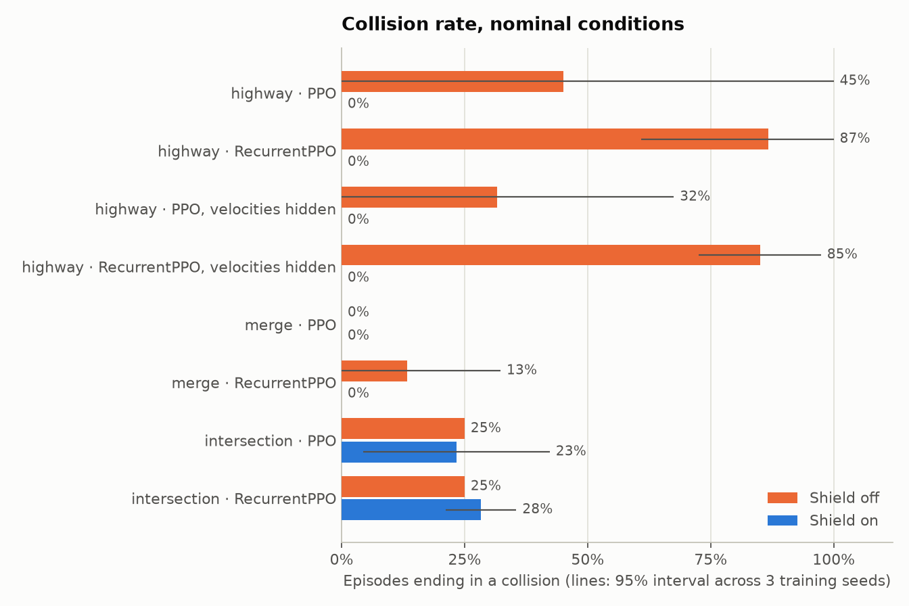
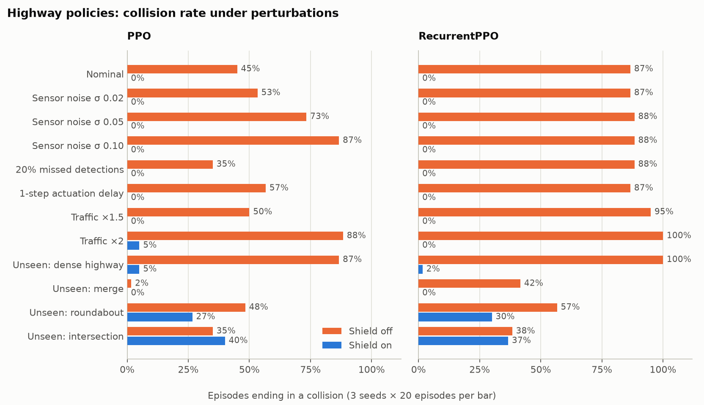
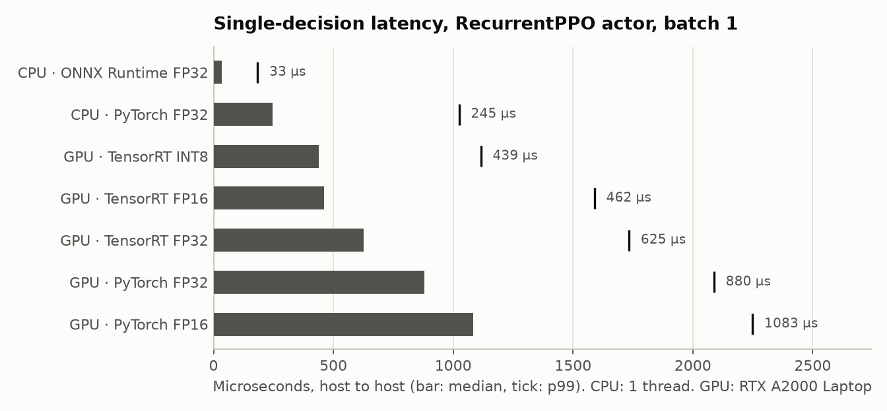
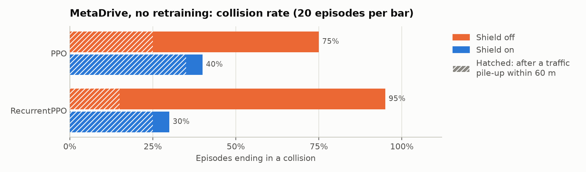
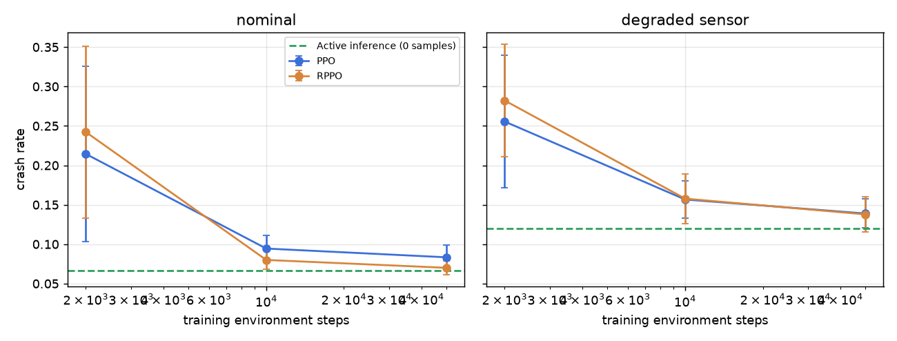

Safe and Explainable RL Driving, from Training to Real-Time Deployment
PPO and RecurrentPPO policies learn lane changes, merges and an unsignalised intersection in highway-env. A rule-based safety shield vets every decision and logs why it intervened, and integrated gradients explain what the policy looked at. The same policy is exported to ONNX and TensorRT, served by a C++ ROS2 node, and tested without retraining in a second simulator, MetaDrive.
New to reinforcement learning or driving stacks? Read the project in plain English, with one decision step by step and a glossary.

Results
| Scenario, agent | Collision, shield off | Collision, shield on | Success, shield on | Speed off → on [m/s] | Decisions overridden |
|---|---|---|---|---|---|
| highway, PPO | 45%0 to 100 | 0% | 100% | 23.2 → 21.5 | 15% |
| highway, RecurrentPPO | 87%61 to 100 | 0% | 100% | 26.7 → 22.2 | 23% |
| highway, PPO, velocities hidden | 32%0 to 68 | 0% | 100% | 21.7 → 21.1 | 10% |
| highway, RecurrentPPO, velocities hidden | 85%73 to 97 | 0% | 100% | 26.2 → 21.8 | 21% |
| merge, PPO | 0% | 0% | 100% | 20.1 → 19.9 | 7% |
| merge, RecurrentPPO | 13%0 to 32 | 0% | 100% | 20.9 → 19.6 | 5% |
| intersection, PPO | 25% | 23%4 to 42 | 43% | 9.0 → 6.2 | 29% |
| intersection, RecurrentPPO | 25% | 28%21 to 36 | 38% | 9.0 → 6.4 | 30% |

Findings
The shield carries safety on highway and merge
Collisions drop to 0% for all six highway and merge policies, from up to 87% without the shield. The price is speed: about 2 m/s on highway and under 0.5 m/s on merge, with 5 to 23% of decisions overridden.
RecurrentPPO is under-trained at this budget
On highway it drives faster than PPO (26.7 against 23.2 m/s) and collides in 87% of episodes without the shield. With the shield it also reaches 0%, but only because the shield overrides about 22% of its decisions, against about 15% for PPO. Hiding the velocities did not hurt PPO, so this run does not show the benefit of recurrence that the partially observable variant was designed to expose. An LSTM policy needs more than 200k samples.
The intersection is a negative result
All six intersection policies learned the same thing: enter at the top target speed and ignore crossing traffic. Outcomes are identical across seeds, algorithms and observation noise, because evaluation episodes share seeds. The shield does not fix it. Slowing down makes the ego miss the 13 s time limit, so success falls from 75% to about 40%, and the remaining side impacts are not anticipated early enough by the crossing-conflict rule. Likely fixes, not run: a larger collision penalty or an arrival-only reward, a yield rule in the shield (stop line and right of way), and longer training.
The intervals are wide
Three seeds is a small sample. The interval for highway PPO without the shield spans 0 to 100%, and the gap between PPO and PPO with hidden velocities is not significant.
Robustness
Every policy was also evaluated under perturbations it never saw in training, each with the shield off and on: Gaussian sensor noise on the normalised observation, 20% missed detections, a one-step (0.5 s) actuation delay, 1.5× and 2× traffic density, and the scenarios it was not trained on.

results/<scenario>/summary.md.- Noise, missed detections and delay degrade the policy itself (PPO: 45% collisions nominal, 87% at the strongest noise). The shield brings every one of these back to 0%.
- This is partly by construction. The shield reads a separate, ground-truth safety channel, as a separately validated perception path would provide, so the perturbations only reach the policy. A shield fed by the same noisy sensor was not tested.
- The shield transfers to lane-following scenarios the policy never saw (dense highway: 87% → 5%, merge: 42% → 0% for RecurrentPPO), only partly to the roundabout (48% → 27%), and not to crossing traffic (35% → 40%). Its rules assume straight, lane-aligned geometry.
Real-time deployment
The RecurrentPPO actor (LSTM-128 plus one 128-unit layer, 112k parameters) is exported to ONNX with its LSTM state as explicit inputs and outputs, and the observation contract is written into the ONNX metadata. TensorRT 10.16 builds FP32, FP16 and INT8 engines, with INT8 entropy-calibrated on recorded on-policy observations. Every backend is scored on latency and on accuracy: logit error and action agreement against PyTorch FP32 on 30 recorded episodes, and closed-loop driving over 20 episodes.

results/benchmark_rppo_highway/benchmark.md.- ONNX Runtime on one CPU thread is the fastest backend at batch 1: 33 µs, 7× faster than PyTorch, with an artefact 6× smaller than the checkpoint. For a 2 Hz decision rate on this hardware it is the right target.
- On the GPU every call pays kernel launch and PCIe copies, about 0.4 to 0.9 ms on this Windows laptop. Within the GPU backends TensorRT FP16 and INT8 are about 2× faster than PyTorch CUDA. The GPU pays off in batches: at batch 32, TensorRT INT8 runs 55k decisions/s against 33k for PyTorch CUDA.
- No measurable accuracy loss. Every backend picks the same action as PyTorch FP32 on 100% of the recorded observations (max logit error ≤ 3.5e-3), and closed-loop outcomes are identical. INT8 is barely faster than FP16, which suggests TensorRT kept most of this small network in higher precision. A per-layer dump would confirm it.
| Measurement | Value |
|---|---|
| gtest, including shield conformance with 2400 Python reference vectors | 8 / 8 passed |
| ONNX Runtime C++ inference, 5000 calls | p50 13 µs, p99 28 µs |
| Node callback: deserialise, infer, shield, publish | p50 157 µs, p99 297 µs |
| Round trip over DDS, observation out to command in | p50 0.76 ms, p99 1.18 ms |
| Closed loop with the C++ shield | 20 / 20 success, 0 collisions, 22.6 m/s, 23% overridden |
The C++ pipeline reproduces the Python evaluation of the same model with the shield on (100% success, 22.2 m/s, 22.8% overridden), so the shield port and the recurrent-state handling behave the same outside Python. Every latency is far below the 500 ms decision period.
Sim-to-sim transfer: MetaDrive
The same ONNX policies and the same shield, with no retraining, drive in MetaDrive. Several things change. The car is a Bullet rigid body driven by steering and throttle instead of a kinematic model. MetaDrive's own IDM traffic waits parked along the road and starts when the ego approaches. Lanes are 3.5 m wide instead of 4 m. The observation contract is rebuilt from MetaDrive ground truth, and a new heading-tracking lane controller and a PI speed controller execute the meta-actions. Setup: 3-lane straight road, 40 s episodes, traffic cruising at 80 km/h, and the same 20 seeds with the shield off and on.


- The policies do not transfer on their own. 75% (PPO) and 95% (RecurrentPPO) of episodes end in a collision, mostly within the first 3 to 10 s. In the episodes we inspected, the ego keeps choosing FASTER towards traffic that is slower or still accelerating from standstill, a situation highway-env never showed it.
- The shield transfers. With the identical rules and thresholds, collisions fall to 40% and 30%. Most of the remaining ones (35 of 40 points, and 25 of 30) follow a pile-up among MetaDrive traffic vehicles near the ego. A 2 Hz shield with emergency braking cannot always stop for that, and the ego's own braking may have caused some of these pile-ups. The price is speed: about 16 m/s instead of 20 to 26 m/s.
- Four interface bugs were found and fixed before these numbers were taken: phantom vehicles pooled from earlier episodes, parked traffic that was invisible to the observation, MetaDrive's top-down renderer shrinking a 1.4 km road below 1 px/m, and a lateral controller that slid off the road on back-to-back lane changes. The controller was then tuned without traffic, and 0 of 80 episodes ended off-road.
- 20 episodes per bar, so differences of ±15 points are within noise. MetaDrive is also not bit-exact between runs. CARLA was the original plan, but it needs at least 6 to 8 GB of VRAM and Vulkan, and it does not run under Docker on Windows or WSL2. The test laptop has 4 GB. The CARLA script stays in
carla_demo/, unrun.
Active inference against PPO and RecurrentPPO
A separate lane-choice problem: a stalled car sits in an unknown one of 3 lanes, and a detector reports its lane with an accuracy that rises from 50% at 5 steps to 75% at 1 step, so evidence has to be accumulated. The pymdp agent is given the generative model and minimises expected free energy. PPO and RecurrentPPO learn from reward. Test conditions: the nominal detector, and a worse detector that no agent has seen.
| Agent | Training steps | Nominal detector | Worse detector | Decision time |
|---|---|---|---|---|
| Active inference (pymdp, horizon 2) | 0 | 6.7% | 12.0% | 8.5 ms |
| PPO | 50k | 8.3 ± 1.5% | 13.9 ± 1.8% | 0.32 ms |
| RecurrentPPO | 50k | 7.0 ± 0.9% | 13.8 ± 2.2% | 0.82 ms |

- Given a correct generative model, active inference is safer than both RL agents even after 50k samples. The open question is where such a model comes from in real driving.
- Only RecurrentPPO approaches it. A single detector reading is wrong 25% of the time, and feed-forward PPO cannot accumulate evidence.
- Under the unseen worse detector, every agent roughly doubles its crash rate. Active inference does not degrade more gracefully. It is also 10 to 25× slower per decision.
How the results were checked
- Shield off and on are compared on the same evaluation seeds, so on the same traffic situations.
- Every number is aggregated per training seed first and then across seeds, so one lucky run cannot carry a result.
- The README tables and the charts on this page are generated from the saved results by
scripts/readme_tables.pyandscripts/report_figures.py. - The C++ shield is pinned to the Python shield by 2400 conformance vectors from real rollouts and synthetic edge cases, checked by pytest and by gtest.
- ONNX and TensorRT outputs are compared with PyTorch on recorded observations and in closed loop before any latency is reported.
- An always-FASTER policy collided in 6/6 highway and 6/6 merge episodes without the shield and in 0/6 with it. This sanity check is also a test.
Limits
- 3 training seeds and 20 evaluation episodes per cell is a small sample, and the intervals are wide.
- Training is short: 200k steps (400k for the intersection). RecurrentPPO in particular is under-trained. The W&B sweep configurations exist but were not run.
- The shield reads ground truth. The robustness results show how much it protects a degraded policy, not how it behaves with a degraded sensor of its own.
- The shield's corridor geometry is lane-aligned, so it is weak on curved lanes and crossing traffic. A map-aware conflict-zone rule is the next step.
- W&B tracking is implemented, but these runs used TensorBoard only: Windows Smart App Control on the test laptop blocks one of W&B's compiled dependencies. The logs can be synced to W&B later.
- Latencies come from a Windows laptop (RTX A2000 Laptop, 4 GB, WDDM driver). An automotive target would give different numbers.
- The GitHub Actions workflow (lint, tests, smoke training, ONNX check, ROS2 build and closed loop) has not run on GitHub yet. Its Docker and ROS2 steps were reproduced locally.
Reproduce
docker compose build train docker compose run --rm train # PPO / RecurrentPPO training docker compose run --rm evaluate # robustness suite × shield off / on make deploy RUN=runs/highway/rppo/seed_1 # ONNX → TensorRT → benchmark (CUDA machine) docker compose build ros2 && docker compose run --rm ros2 # C++ node, closed loop make metadrive # sim-to-sim transfer python scripts/readme_tables.py && python scripts/report_figures.py
Source, configuration and the full write-up are in the repository.